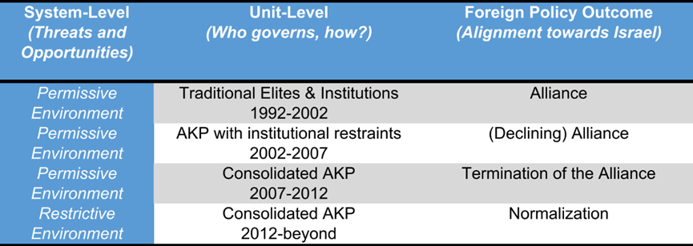

收录于合集 #区域国别 9个

作品简介
作者： Ersel Aydinli是土耳其比尔肯特大学国际关系学教授，研究领域包括跨国关系与安全、国际关系社会学和本土理论。Onur Erpul，比尔肯特大学外交政策与和平研究中心博士后研究员。
编译： 秦子宁（国政学人编译员，武汉大学国际政治学硕士生）
来源： Aydinli, E., & Erpul, O. (2021). Elite Change and the Inception, Duration, and Demise of the Turkish–Israeli Alliance. Foreign Policy Analysis , 17(2), oraa021.
归档： 《国际关系前沿》2021年第10期，总第37期。

内容摘要
本文研究了1966年至2011年期间土耳其- 以色列联盟的出现和令人困惑的终止。研究者通过运用改良后的新古典现实主义分析框架，在纵向上对土以联盟进行了再背景化（recontextualize）。具体来说，土耳其的精英决策者在联盟诞生和崩溃期间都没有面临任何明显来自于国际体系的威胁信号，他们可以自由地奉行偏爱的外交政策。但土耳其国内存在着两派精英的斗争，即以传统官僚和军人为代表、信奉凯末尔主义的旧精英和以正义与发展党（AKP）为代表的宗教保守主义新精英之间的斗争。20世纪90年代，旧精英利用掌握的制度权力来约束新精英，并以与以色列的联盟为借口压制国内宗教力量。随着新精英阶层夺取了国家权力，在国内不受约束、也没有外部敌人的新精英把以色列描述为一个威胁，以赢得更多的国内支持，最终导致土耳其- 以色列联盟的终止。本文得出的结论是，在宽松的国际环境和精英引发的国内冲突的交叉影响下，国家的联盟政策会变得不稳定。
文章导读
国家联盟是在地缘政治竞争的严峻考验下形成的，当今的许多联盟都是在冷战期间建立的。在冷战期间，安全问题、不断变化的物质能力和意识形态决定了各国对联盟的偏好。然而，在后冷战时期，由于没有迫在眉睫的外部威胁，国家间竞争的必要性已经下降。在这种新环境下，系统层面的要求向外交政策精英发出了模糊的信号。
01
世界政治中的联盟
国关主流理论将国家视为理性的行动者，国家根据系统层面上不断变化的物质环境，比如联盟的效用和可信度的下降，来塑造自己的偏好、威胁感知的变化和联盟伙伴的可选性。结构现实主义联盟理论认为国际联盟是国际政治的一个重要特征，但却对联盟的持续和终止不加考虑。现实主义者认为联盟只是暂时现象，会随着安全环境的变化而变化。结构现实主义者尤其会凭直觉认为，一旦 “存在的理由”（raison d’etre）终止，联盟就会解体。
土耳其- 以色列联盟的出现和终止都不能归因于国际结构变化、政权变化或身份本身的变化。尽管与以色列的联盟在一个新的土耳其伊斯兰政府执政期间解体了，但这既不能解释土耳其- 以色列联盟的出现和终止，也不能解释土耳其政府结构的复杂性。简单的政府更迭不能解释土耳其外交政策的根本转变，因为AKP作为新精英政府的代表在早期对以色列是友好的。土耳其混合的政治体制表现出与之前研究过的许多案例截然不同的特质，其转型释放出的动力，并不符合现有的安全、理性政治、基于利益或身份的解释。
02
研究方法
新古典现实主义提供了一个很好的视角来调查精英变化对联盟的影响，因为它将单位层面（unit- level）的因素纳入了外交政策的研究。新古典现实主义被用来解释国内因素和微观过程如何影响决策者的计算，从而导致对外部安全环境的误判或低效的外交政策反应。新古典现实主义认为，国家利益是由具有特定利益的不完美决策者制定的，他们的选择可能会受到他们对国际体系的看法以及社会和制度因素的限制(见图1)。本文调查了在国际安全环境受中限制较少的国家，以及在国家安全和外交政策机构中没有事先经历社会化的新精英掌权的国家，它们的联盟关系会发生什么变化。
图1 新古典现实主义分析框架
当能力和威胁限制决策者的选择时(即威胁和盟友很容易识别)，国际体系可以指导联盟选择。但当这些信号不明确时，决策者可能会选择对更直接的国内威胁作出反应或进行自我扩张。在这种情况下，国内权力整合可能是他们的主要目标。这就需要新的精英阶层进一步巩固自己在关键职位上的地位，并进一步建立公众的支持。国家安全事务通常会影响外交政策议程，但现在却让位于国内利益。土耳其的例子表明，在没有明显外部挑战的情况下，国家利益的形成可能有三个替代来源:精英群体的利益、有权势个人的偏好和社会因素。这些外交政策的替代根源妨碍了土耳其与一个在其他方面很有价值的盟友保持友好关系。事实上，在这样一个没有明显威胁的国际环境中，在一个将土耳其标榜为和平灯塔的环境中，新精英虚构出了一个外部威胁的神话，并受到国内民众的欢迎，新的精英们也乐于将这种考量纳入他们的外交政策，最终导致了与以色列同盟的结束。
土耳其- 以色列联盟是检验精英改变权力主张的绝佳案例。土耳其一分为二的现代化计划形成了强大的中央集权精英与软弱得多的公民社会相互对峙的状态，随着土耳其国内权力结构的改变，其对外结盟的选择也发生了变化。
选择关注土耳其的国内转型原因有二。首先，土耳其提供了一个具有二元统治结构的国家的实例，在这个国家中，精英之间的冲突过程导致了新的保守派导向精英取代了以前的中央集权主义精英。其次，对土耳其的关注让我们可以研究一个国家激进的国内变革是如何导致其国际联盟偏好的修正的。
通过考察20世纪90年代土耳其的精英结构和21世纪初土耳其国家的法律、政治和制度转型，本文运用新古典现实主义框架，将自变量（体系压力）视为一个常数，研究影响因变量（外交政策）的干预变量——国内精英结构。可以看出，在宽容的外部环境下，统治精英的变迁导致了土耳其的联盟政策发生变化，而一旦土耳其政府开始在邻国遭遇外交孤立，它就放弃了对以色列的敌意，体现出体系压力对于其联盟政策的根本影响（见图2）。

图2 土耳其联盟偏好的演变
03
土耳其-以色列联盟的起源
冷战结束后，土耳其在探索新的地缘政治方向，在中亚和中东建立新的联系。然而这些地区要么曾被苏联直接统治，要么由于超级大国的竞争和间断性的地区内战争而难以取得关系突破。在后冷战时期的宽松环境下，土耳其于1992年把与以色列的关系提升至大使级，并于1994年和1996年签署了两项自由贸易协定。在这个过程中，军队起到了重要作用，成为这一关系背后的驱动力。土耳其和以色列达成了一项军事协议，该协议将使以色列能够对土耳其的武器系统进行现代化升级，同时在情报共享和军事训练方面进行合作。两国都从这一安排中受益匪浅。以色列可以依靠土耳其领空提供更广阔的战略空间，而土耳其武装部队则获得了更强大的军事威慑能力，在以色列的帮助下包围叙利亚和伊拉克，并获得了宝贵的高科技武器。与此同时，也有证据表明，土耳其世俗主义精英利用这些外部理由来掩盖他们的别有用心，以平衡国内威胁。
在20世纪90年代的土耳其，外部威胁的重要性不亚于对内部威胁的影响。土耳其的传统精英主要关心的是库尔德工人党和国内的伊斯兰政治。这些担忧影响了土耳其与叙利亚和伊朗的关系。叙利亚支持库尔德工人党，而土耳其认为伊朗正在寻求传播伊斯兰革命，两者都被认为是对土耳其世俗共和秩序的威胁。对政治伊斯兰化和库尔德工人党的担忧，以及随之而来的外部威胁的出现，激发了传统精英选择与以色列组成“世俗联盟”。此外，土耳其和以色列都试图树立一个世俗的、民主的、欧洲国家的共同形象，对于这种角色的追求也促成了二者的结盟。
1.二元统治:土耳其的两极精英结构
土耳其的中央集权主义者，有时被称为凯末尔派，主要支持者为官僚机构和军队中的精英群体。他们拥护现代主义民族主义，目标是使土耳其成为一个单一的民族国家，拥有世俗政权和现代化的西化社会。这些情绪很大程度上是对奥斯曼帝国崩溃痛苦经历的回应，与土耳其共和历史上保守主义偏好相违背。
在国内，现代化/西方化必须继续快速进行，土耳其军方承担了对国家的监护作用。对中央集权的精英来说，这导致了一个两难境地:现代化是国家安全的必要条件，但现代化会带来权力分散的问题，这种民主化取向，反而带来了保守主义反弹的风险。
在这个体系中，一个具有政治影响力的军事官僚机构接管了高级政治的硬领域，将民选官员降级到管理“表面国家”，执行日常的低政治政府职能。由于军队的制度权力，中央集权的精英们掌握着权力，而随着每次成功的政变，“国家”和“政府”的割裂变得更加明显。1960年的政变中后，土耳其的新宪法将国家安全委员会作为宪法授权的咨询机构。
2.土耳其-以色列联盟的国内根源
1996年，伊斯兰主义者埃尔巴坎成为联合政府的领导人，这让军方非常懊恼，他们采取了观望态度。在这个联合政府中形成了“三头外交政策”：军方促进了与以色列的关系；副总理兼外交部长坦苏·奇莱尔（Tansu Çiller），她主导了与欧盟的关系;埃尔巴坎则促进与伊斯兰世界关系。虽然一些政府官员表示土耳其可以在任何时候推翻其与以色列的条约，但是军方垄断了与以色列的关系，并确保埃尔巴坎将遵守，最终使得土耳其政府在1997年1月1日批准了一项新的与以色列贸易协定。
然而在随后，一场伊朗支持的反以色列文化活动在安卡拉举行。随之而来的社会动荡，尤其是来自宗教团体的动荡，以及库尔德工人党引发的恐怖主义，为世俗精英做出回应提供了理由。军方迅速出动武力肃清了示威地区并逮捕了市长，推翻了埃尔巴坎政府。
反对外国盟友的公民社会示威会导致对国内政治的决定性干预，这在其他国家非常罕见。联盟作为一种压制国内力量的借口被证明是非常有用的，因为它使用了一种合法的方式来压制社会上的伊斯兰情绪，土耳其的老精英们成功地利用外部借口压制了国内的敌人(见图3)。
图3 土耳其与以色列结盟的行为逻辑
04
****新土耳其的外交政策
在2002-2010年宽松的国际环境下，土耳其的新精英们认为，与以色列的新兴关系并不是必要的，他们根据国内观众和其他偏好，宣传反以色列的言论。
上世纪90年代，两国有很多理由成为盟友。在面临内部威胁的情况下，以色列似乎是土耳其老精英们有用的盟友。依靠这个联盟，土耳其迫使叙利亚驱逐库尔德工人党，改善了自身的安全状况。与此同时，伊拉克战争导致萨达姆倒台，消除了该地区一个主要的不稳定因素，取而代之的是对伊拉克政府垮台和库尔德独立前景的担忧。总的来说，21世纪初的外部安全形势对土耳其来说更加有利，土耳其及其邻国的军事和经济趋势表明，这可能削弱了与以色列联盟的重要性。
1.联盟的衰落
人们普遍预测，伊朗的核野心会成为以色列与土耳其联合的重要原因，然而事实却是伊朗提高了其国家实力与核能力，与土耳其的关系也得到了改善。人们担心伊朗的影响会形成一个“什叶派新月”，从而打破地区力量平衡。
土耳其和伊朗的关系在签署新的能源协议后有所改善。土耳其甚至在作为联合国安理会成员时，否决了对伊朗的制裁。尽管认识到伊朗潜在的核能力危险，土耳其对以色列核武器对地区稳定构成的危险却更加直言不讳。
2.执政精英的变化
土耳其新的执政精英的核心是保守派政客，主要由拒绝世俗主义的伊斯兰政治运动骨干组成。他们得到了由安纳托利亚资产阶级组成的职业群体的支持，保守派不仅在1980年政变后土耳其向市场经济转型的过程中获取了权力，还被军方有意识地灌输了反左翼意识形态。
这个群体中的改革派分子组成了正义与发展党，该党将自身定位为一个温和的政党，支持另一种现代化道路。与繁荣党奉行的极端宗教主义相区分，该党主张优先考虑政治生存，而非改革土耳其社会。为此，他们支持土耳其的民主化进程、加入欧盟的任务和西方取向。该党在2002年议会选举中获胜，并成立了多年以来首个单一政党政府。第二年补选中，前伊斯坦布尔市长埃尔多安成为总理。埃尔多安是一个有争议的人物，曾因发表反世俗言论被捕入狱。总体上说，AKP采取了温和的立场，为他们赢得了“伊斯兰自由主义者”或“有战略的现代主义者”的称号。
正义与发展党还在包括知识分子、商人和官僚在内的广泛社会网络中获取了盟友。然而，AKP的当选还是加剧了土耳其宗教主义与世俗主义、旧精英与新精英的冲突。
尽管人们担心正义与发展党的伊斯兰根源，但他们的外交政策，特别是争取欧盟成员国身份的行为，普遍获得了老精英们的支持。在第二次选举获胜后，AKP相较军方占据了上风。土耳其在这一时期的外交政策变得更加自信和主动。
3.制度变迁和新精英的巩固
在正义与发展党掌权后，土耳其的政治体系发生了重大变化。许多制度变迁是在旧精英的主动与克制下实现的，最终导致了国内权力的转移。在土耳其寻求加入欧盟的早期，各派精英就实施《哥本哈根标准》等原则的必要性达成了共识，这些原则要求土耳其政治实现真正的文明化和政治自由化。
关于土耳其武装部队的政治资金问题，军方出现了分裂。当一个由冷战分子组成的保守团体担心土耳其的现代化进程可能会因改革被破坏时，一个进步的“渐进主义”派系却愿意让历史顺其自然。土耳其政府随机在军方的同意下进行了许多改革。经历改革后，更多的文官被引入国家安全委员会，其资金和其他军事开支受到会计法庭的审查，土耳其政府不再对国家安全委员会负责。
随着土耳其总统，世俗主义者塞泽尔任期结束，正义与发展党提名了阿卜杜拉·居尔为候选人。这一消息引发了人们对世俗主义的担忧，土耳其武装部队表示将继续保护土耳其共和国的世俗性质。这是对总统候选人的一种几乎不加掩饰的威胁，因为居尔妻子戴着面纱——这是政治伊斯兰的象征。然而2007年7月，AKP宣布提前举行选举并以压倒性优势获胜，公众对军方发出的最后通牒做出了反应。同年夏天，许多前军官、高级现役军官和包括学者和记者在内的公众人物被控阴谋推翻土耳其政府，导致数百名军官、记者和学者被捕。AKP在政治斗争中取得胜利。
4.新的外交政策执行者
正义与发展党取代了传统精英的权力，但是却缺乏人力资源来运行庞大的政府机构。在这个过程中，AKP通过建立一个由自身支持者组成的广泛的同盟来夺取权力，并促成了与居伦运动之间的战略伙伴关系。
与AKP不同，居伦运动更加倾向于亲以色列反伊朗的立场，随着埃尔多安和AKP夺取权力，土耳其变得对以色列的态度更加强硬，导致了居伦运动和正义与发展党的紧张关系。
安纳托利亚资产阶级是主要的经济参与者，通过与AKP政府结盟，各种企业和商业协会开始享受政府的特权关系，土耳其外交政策也更加强调经济和贸易关系，重视土耳其的软实力。
除了商业团体以外，智库和非政府组织也支持AKP政府。在其领导下，土耳其智库数量激增，公民社会对政策制定的参与逐步增加。
除了巩固国内权力和追求商业利益的愿望之外，新精英们很难确定一个明确的政策议程(无论是国外的还是其他方面的)，尤其是在2005年土耳其申请加入欧盟失败之后。
在这个背景下，外交部长达武特奥卢的外交政策计划被土耳其政府接受。他提出一个合理连贯的外交政策愿景。作为一位学者，他因为对土耳其的旧精英和他们的现代化计划沿着共和价值观的批评立场，受到“旧”土耳其精英的冷落和排斥，他认为建制派的政策造成了受创的穆斯林社会，迫使它成为西方的边缘国家。
他认为，由于战略位置和历史联系，土耳其应该成为一个中心国家，奉行积极的外交政策，在多个地区担任领导角色。在这种模式下，土耳其必须平衡民主与安全利益，促进区域合作与对话，并采取“与邻国零问题政策”。
达武特奥卢主张深化与中东国家的关系，同时也推动外国捐赠援助，土耳其与中东国家的经济联系日益密切就是明证。在“零问题”的高调言论下，达武特奥卢不仅质疑土耳其在1949年立即承认以色列独立，而且认为以色列是一个人造国家，构成中东的“毒瘤”。
5.重新制定国家利益
土耳其新精英执政期间，以色列从宝贵的战略资产降级为“毒瘤”。在旧的精英统治下，土耳其与以色列结盟压制新兴的国内对手，但新精英选择了相反的道路。在新的精英阶层于2007年巩固权力后，土耳其和以色列之间的紧张关系达到了顶峰。
土耳其的外部安全环境是宽松的:除了伊朗的核野心，没有明显的国家间威胁。土耳其发现，在小布什和奥巴马执政后期，它在中东有了更多的外交回旋余地，因为土耳其需要填补“幕后领导”政策留下的领导力真空。在这种背景下，以色列在新的土耳其精英看来是唯一不接受土耳其野心的国家。在没有切实威胁和制度约束的情况下，精英阶层在奉行基于他们特定的外交政策方面享有更大的自由。
更重要的是，土耳其传统的、制度化的外交政策来源，如军队和文职官僚，已经失去了执行符合自身期望的外交政策的权力。由于他们的专业背景和世界观的不同，新精英们也有了不同的外交政策观念，他们的世界观容易受到达武特奥卢所阐述的那种愿景的影响，从而导致了一种冲动的外交政策。
在马尔马拉号事件后，土耳其和以色列的关系达到最低点，两国于2016年开始外交正常化努力。随着土耳其面临更为严格的国际环境——除与以色列盟友关系破裂外，新出现的边界威胁,如伊斯兰国和民主联盟党（库尔德工人党分支）的崛起也使土耳其重新审视自身的外交政策。根据目前理论的预期，结构性信号有利于土耳其和以色列之间的合作。尽管全面的和解未能实现，但土耳其和以色列改善关系的条件越来越有利，因为两国都不喜欢叙利亚的阿萨德政权，双方都可以从地中海东部的能源问题上的合作中受益。
05
结论
这项研究有两个理论意义。 第一层意义是，理解当代民主化国家联盟政策的关键在于理解约束的来源:无论是来自国际体系还是源自国内 制度。 在国际结构压力较小、外交政策执行者可以更自由地探索不同的安全选项（制度约束不足）的地方，决策者可能会优先考虑国内和特定的利益，尤其是当传统上由中央集权主义精英主导的制度不再能抑制社会冲动时。鉴于国内制度的性质不断变化，要理解当代世界的联盟行为，重要的是关键人物的偏好，而不是各国想当然的威胁观念。在传统精英体制结构因出现有影响力的新行动者而崩溃的情况下，这种必要性就更加复杂。
第二层意义是, 国内结构的变化——掌权者的更迭、政治机构的控制、新行为体的出现、新身份和新利益的明晰、新法律的制定、政府的工具化，暗示着联盟行为的跨国化。 国内权力的转移可能导致联盟的失败，这一发现让人质疑温和政治改良主义者（minilist）和结构性的中央集权主义模型在解释外交政策方面的有效性。
同时，本文运用的新古典现实主义分析框架，可以帮助我们了解在不断变化的国内外环境下联盟行为的变迁。
译者评述
这篇论文运用新古典现实主义的框架，分析了土耳其- 以色列联盟的出现和终结。新古典现实主义认为，系统压力必须通过单位层次的干预变量加以转化。因此，在国家实行外交政策的过程中，国家会根据自身的主观经验来去解读外界信号。
冷战后，土耳其作为北约成员和积极推动西方化的中等国家，无需面对任何生存威胁。因此，土耳其享有了一个宽松的国际环境。在这个环境下，土耳其的执政精英能够自由地寻求特定的利益，传统的凯末尔主义者就通过与以色列结盟，来压制国内的伊斯兰力量。随着土耳其的民主化和奉行温和伊斯兰主义的正义与发展党夺取了国家权力，新的精英在外交政策上表现出更加积极自主的取向。土耳其政府寻求在中东地区成为一个具有领导力的力量，而非传统上远离中东，寻求加入欧盟的角色。在这个过程中，正义与发展党政府通过挑动国内的民粹情绪，发布反以色列言论，获取更多的支持。
根据本文的结论，译者提出了以下思考：
在当今的国际社会内，主权不可侵犯和协商解决冲突的观念在全球得到了广泛的认可，大多数国家的行动根源不再是现实主义理论提出的权力、生存安全。在这个前提下，很多国家的外交政策出发点暂时不用完全基于国家层面的利益考量，而是更容易受到国内群体特定诉求的影响。因此，在研究国家外交政策的过程中，需要考量一种新的视角，即全球化对于国家自我定位和身份感知破坏所引发的焦虑感，深刻影响到国内精英对于国家身份的认知，进而影响到国家行动。
词汇整理
新古典现实主义 Neoclassical realism
凯末尔主义 Ataturism
结构性信号 structural signals
哥本哈根标准 Copenhagen Criteria
幕后领导 Leading from behind
建制派 the Establishment
责编 | 徐一君 张鸿儒
排版 | 王慧瑜 方引弓
文章观点不代表本平台观点，本平台评译分享的文章均出于专业学习之用, 不以任何盈利为目的，内容主要呈现对原文的介绍，原文内容请通过各高校购买的数据库自行下载。

国政学人
支持学术公益与知识传播
微信扫一扫赞赏作者 __赞赏
已喜欢，对作者说句悄悄话
取消 __
发送给作者
发送
最多40字，当前共字
上一页 1/3 下一页
长按二维码向我转账
支持学术公益与知识传播
受苹果公司新规定影响，微信 iOS 版的赞赏功能被关闭，可通过二维码转账支持公众号。